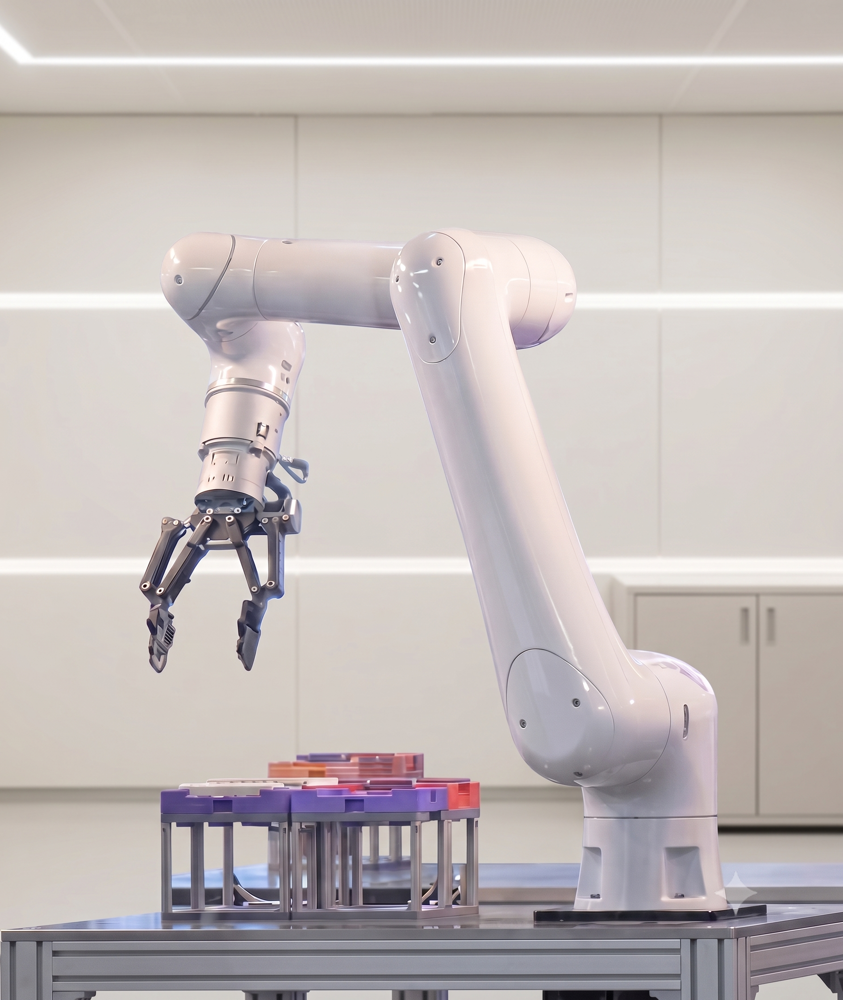

Robot fleet control
One surface for instruments, queues, and execution.
HelixOS turns separate robots into one operating system, so task routing, handoffs, and live status stay synchronized.
The result is a control plane that can run parallel work without losing the state of the lab.
